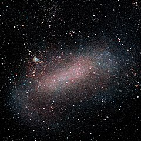
10.75° × 9.17°
4.3-9.86
1011
SB(s)m
49.97
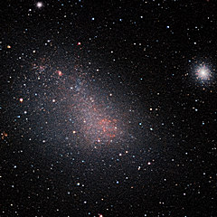
5°20′ × 3°5′
2.15-3
7 * 109
SB(s)m pec
60.6±1.0
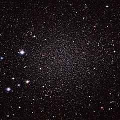
39′.8 × 30′.9
dE
90±10
35′.5 × 24′.5
0.83±0.1 × 0.57±0.07
dE
80±10
Возможно, имеет наибольшее из известных отношение масса-светимость.
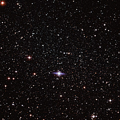
23′.4 × 15′.5
1.51-1.69 × 106
dE3
100 ± 10
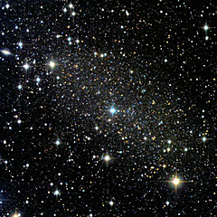
30′.2 × 19′.1
dE
60 ± 10
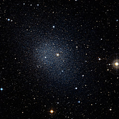
17′.0 × 12′.6
dE0
140 ± 10
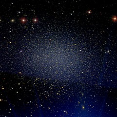
9′.8 × 7′.4
(2.0 ± 1.0) × 107
E, dE3
250 ± 20
Галактика находится в 12 угловых минутах от звезды 1.4 зв. величины Регул
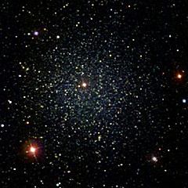
12.0 x 11.0
0.18-0.63
(2.7 ± 0.5)×107
E0 pec
210 ± 20
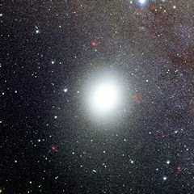
8′.7 × 6′.5
2
cE2
763 ± 24
Содержит сверхмассивную черную дыру M32* 1.5-5 млн. M☉
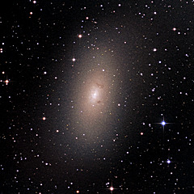
21′.9 × 11′.0
E5 pec
750–850
В отличие от M32, не содержит сверхмассивной черной дыры
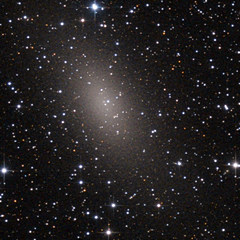
13′.2 × 7′.8
dSph/dE5
780 ± 30
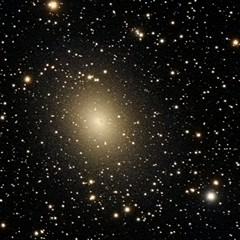
11′.7 × 10′.0
dSph/dE3, Sy2
630 ± 40
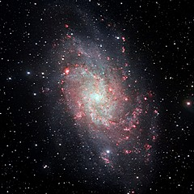
70′.8 × 41′.7
18.4
5 × 1010
SA(s)cd
840
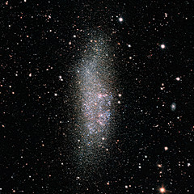
11′.5 × 4′.2
3.54
IB(s)m
930 ± 30
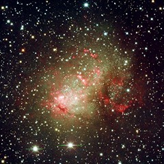
6′.8 × 5′.9
3.81
dIrr IV/BCD
660 ± 60